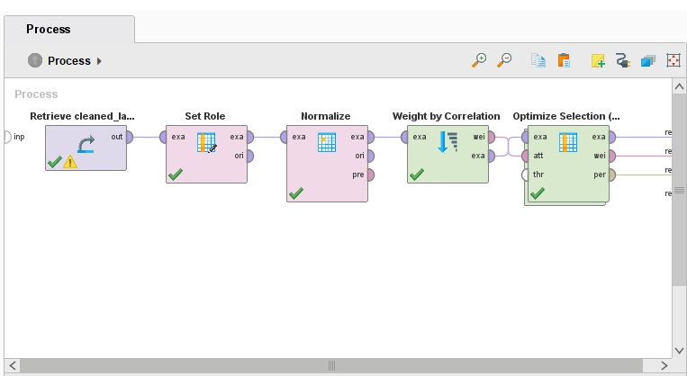
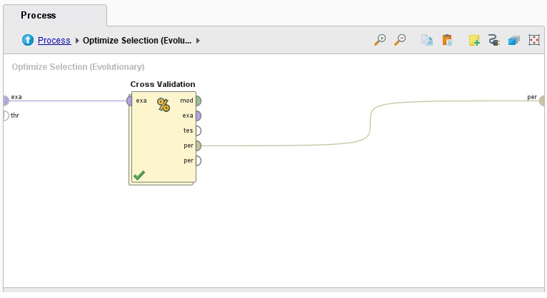
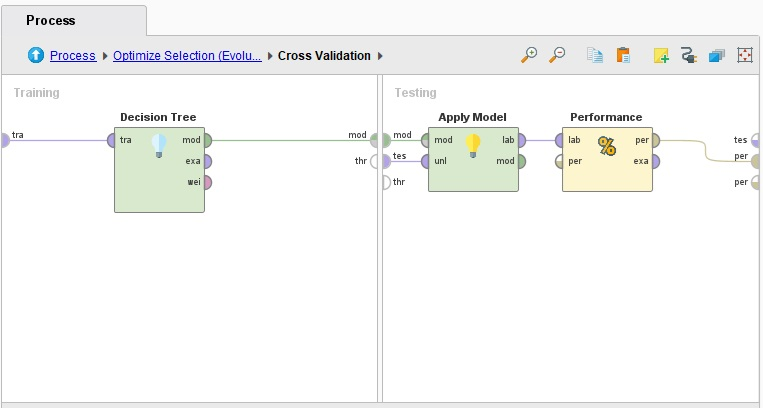
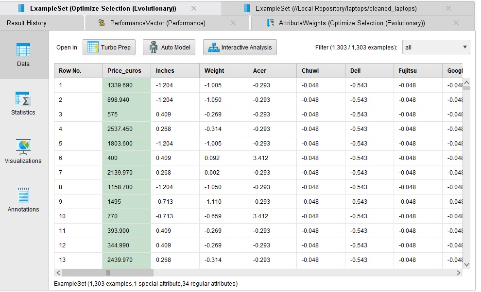
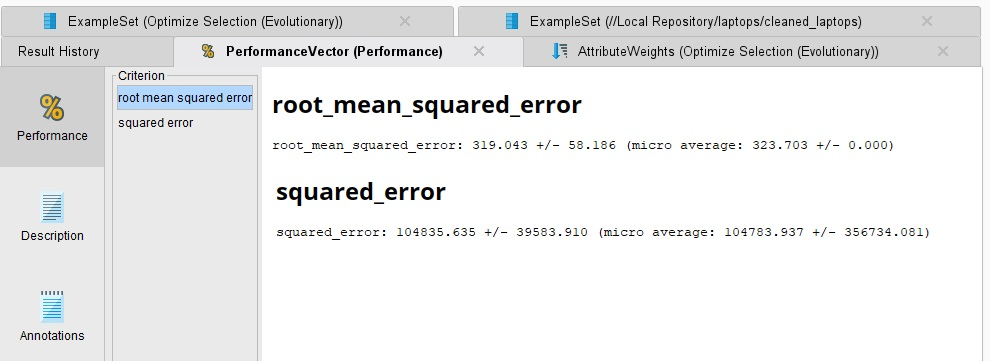
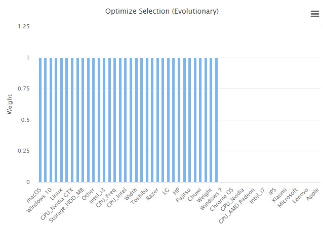

Prediccion de precios de laptops

El propósito de este post es realizar un proyecto que demuestre de comienzo a fin un proceso de Machine Learning, el cual permitirá realizar tareas de predicción sobre un campo en concreto. En este caso se buscará predecir el precio que tendrá una laptop, basándose en las distintas características de la misma.
Preparacion de datos
El primer paso en un proceso de Machine Learning siempre es conseguir los datos. Para esto se puede utilizar un repositorio como UCI o Kaggle para extraer los mismos, los cuales suelen estar en formato CSV (aunque no necesariamente). Para este caso en particular existen muchos datasets que pueden ser útiles, de los cuales se ha elegido el de _laptop_prices_. El mismo contiene un CSV con los siguientes campos:
Company- String - Laptop ManufacturerProduct- String - Brand and ModelTypeName- String - Type (Notebook, Ultrabook, Gaming, etc.)Inches- Numeric - Screen SizeScreenResolution- String - Screen ResolutionCpu- String - Central Processing Unit (CPU)Ram- String - Laptop RAMMemory- String - Hard Disk / SSD MemoryGPU- String - Graphics Processing Units (GPU)OpSys- String - Operating SystemWeight- String - Laptop WeightPrice_euros- Numeric - Price (Euro)
(Campos directamente extraídos de la documentación del dataset)
De esta información, lo que interesa predecir, la variable objetivo, es Price_euros. Por lo tanto, al ser una variable numérica, implica que se tendrá que utilizar algún modelo de regresión.
Feature selection
Previo al análisis de los datos, se puede ver si existe alguna columna que pueda ser removida del dataset, principalmente columnas que, o no aporten para predecir la variable objetivo, o que tengan algún problema por el que no pueda ser usada. En este caso, se puede ver a simple vista que el nombre del modelo (Product) de la laptop no resulta útil, dado que lo más importante para predecir el precio son los componentes de la laptop y la marca, los cuales ya existen en el dataset. El modelo en particular no suele añadir una gran diferencia en el precio por sí mismo.
Otro ejemplo de columna que se puede remover es la de TypeName. A simple vista uno podría pensar que esta columna es importante, ya que una computadora para gaming será más cara que una simple Notebook, pero en realidad si la computadora para gaming es más cara, es por los componentes, los cuales ya están siendo considerados. Por lo tanto, se puede remover la columna, ya que existe una correlación entre dichas columnas.
Análisis de datos
Para comenzar a analizar los datos, es recomendable ver si el formato de los mismos es correcto. Por ejemplo, en este caso el peso (Weight) esta en kilogramos, teniendo filas con el formato RAM (aunque no tiene tantas clases).
Otro problema (e incluso más importante), es que si el modelo solo acepta valores numéricos entonces no podremos ingresarle dichas clases. Por lo tanto (y de poderse) podría ser conveniente convertir todas las clases a valores númericos.
Por otro lado la CPU es un dato categórico, que es de vital importancia para predecir el precio de una laptop. El problema de la CPU es que su nombre varia mucho por los distintos modelos, sus velocidades, generaciones, etc., por lo que se debe modificar para que el modelo provea un mejor resultado. Hay muchas técnicas que se pueden aplicar en este tipo de casos, como por ejemplo la agrupación de categorías o One-Hot Encoding. En este caso se utilizará One-Hot Encoding, el cual implica separar en distintas columnas las distintas clases presentes, y que cada una posea un valor binario. Por ejemplo, si solo hay procesadores Intel y AMD, existirán dos columnas, y si una laptop tiene procesador Intel entonces tendrá un 1 en Intel y un 0 en AMD. Como las CPU contienen no solo la marca, si no también el modelo y la velocidad, se pueden separar también en distintas columnas utilizando la misma técnica. Esto quedaría como una columna llamada CPU, otra CPU_Freq, y otra CPU_Gen. Con este cambio, CPU ahora tendrá Intel o AMD en lugar de Intel Core i5 7500U 2.1GHz, lo que es una mejora, pero se puede volver a realizar One-Hot Encoding, esta vez con las marcas, para así poder tener valores numéricos. Esto resulta en una columna Intel, otra columna AMD, etc.
Para las generaciones se pueden agrupar en grupos grandes, como por ejemplo i3, i5, i7, A9, Ryzen, y otros, y aunque no se contemplan todos los casos en detalle, si se toman en cuenta los modelos más usados.
En el caso de la marca, también se realizara One-Hot Encoding. Otra opción podría ser pasar las distintas clases a números, pero esto implicaría darles un orden a las clases, y al no tener un orden inherente, el modelo puede llegar a pensar que hay una relación según el orden de las clases cuando en realidad no la hay (por ejemplo, podría pensar que Google es más parecido a Apple que a HP solamente porque los números de Google y Apple están más cerca entre ellos que de HP, cuando en realidad no es así).
Lo mismo se puede realizar con el sistema operativo.
Para la ScreenResolution se puede tomar el tamaño de la pantalla, y quedarse con el ancho y el alto. Luego de analizar la columna, el otro dato interesante que tiene es si es IPS o no (se puede sacar con One-Hot Encoding). No existen laptops TN, VA, u OLED en el dataset, y si es Full HD, 4k, etc. se puede sacar de la resolución de la pantalla.
Con respecto a la GPU, al tener muchas clases muy utilizadas, se puede filtrar en excel las que se repiten más de una cierta cantidad de veces, y únicamente tomar esas. Notar que si se utiliza demasiado One-Hot Encoding puede resultar en una matriz muy esparsa, lo que dependiendo del modelo puede empeorar su performance.
Se puede seguir este proceso hasta conseguir que todos los predictores sean valores numéricos que el modelo pueda utilizar.
El código utilizado para estos ajustes es el siguiente:
import pandas as pd
# Read the file
df = pd.read_csv('./laptop_price.csv', encoding='ISO-8859-1')
# Manual feature selection
df = df.drop(columns=['laptop_ID', 'Product', 'TypeName'])
# One-Hot encoding with companies
Company_dummies = pd.get_dummies(df["Company"]).astype(int)
df = pd.concat([df, Company_dummies], axis=1)
df = df.drop(columns=['Company'])
# Grab panel type and screen resolution
df["first_word"] = df["ScreenResolution"].str.split().str[0]
df["last_word"] = df["ScreenResolution"].str.split().str[-1]
# Function to parse the resolution and determine if it's IPS or Touchscreen
def parse_resolution(row):
resolution = row['last_word']
is_ips = 1 if row['first_word'] == 'IPS' else 0
try:
width, height = map(int, resolution.split('x'))
return pd.Series([width, height, is_ips])
except ValueError:
# Handle cases where resolution parsing fails
return pd.Series([None, None, is_ips])
def has_touchscreen(description):
return 1 if 'Touchscreen' in description else 0
# Create the new feature
df['Touchscreen'] = df['ScreenResolution'].apply(has_touchscreen)
# Apply resolution to df
df[['Width', 'Height', 'IPS']] = df.apply(parse_resolution, axis=1)
df = df.drop(columns=['first_word', 'last_word', 'ScreenResolution'])
# Parse CPU
df["CPU_Brand"] = df["Cpu"].str.split().str[0]
# One-Hot Encoding with CPU Brand
cpu_dummies = pd.get_dummies(df["CPU_Brand"], prefix='CPU').astype(int)
df = pd.concat([df, cpu_dummies], axis=1)
df["CPU_Freq"] = df["Cpu"].str.split().str[-1]
df["CPU_Freq"] = df["CPU_Freq"].str[:-3].astype(float)
df["CPU_Model"] = df["Cpu"].str.replace(r'^\w+\s+', '', regex=True).str.replace(r'\s+\d+GHz$', '', regex=True).str.strip()
# Group by Brand and Model Family
def group_cpu_model(model):
if 'i3' in model:
return 'Intel_i3'
elif 'i5' in model:
return 'Intel_i5'
elif 'i7' in model:
return 'Intel_i7'
elif 'A9-Series' in model:
return 'AMD_A9'
elif 'Ryzen' in model:
return 'AMD_Ryzen'
else:
return 'Other'
df['CPU_Gen'] = df['CPU_Model'].apply(group_cpu_model)
# One-Hot Encoding with CPU_Gen
gen_dummies = pd.get_dummies(df["CPU_Gen"]).astype(int)
df = pd.concat([df, gen_dummies], axis=1)
df = df.drop(columns=['Cpu', 'CPU_Model', 'CPU_Gen', 'CPU_Brand'])
# Remove GB from RAM and convert to number
df["RAM"] = df["Ram"].str[:-2].astype(int)
df = df.drop(columns=['Ram'])
# Function to process storage and separate SSD, HDD, and Flash
def process_storage(storage):
total_ssd_mb = 0
total_hdd_mb = 0
total_flash_mb = 0
# Split by '+' for combined storage
for part in storage.split('+'):
part = part.strip() # Remove extra spaces
# Check for TB, GB, or MB
if 'TB' in part:
capacity = int(float(part.replace('TB', '').strip().split()[0]) * 1024 * 1024) # Convert TB to MB
total_hdd_mb += capacity # Assuming TB is HDD by default
elif 'GB' in part:
# Extract numeric part and convert
capacity = int(float(part.split()[0].replace('GB', '').strip())) # Extract numeric part
if 'SSD' in part:
total_ssd_mb += capacity * 1024 # Convert GB to MB
elif 'HDD' in part:
total_hdd_mb += capacity * 1024 # Convert GB to MB
elif 'Flash' in part:
total_flash_mb += capacity * 1024 # Convert GB to MB
elif 'MB' in part:
# Extract numeric part and convert
capacity = int(float(part.split()[0].replace('MB', '').strip())) # Extract numeric part
if 'SSD' in part:
total_ssd_mb += capacity # Already in MB
elif 'HDD' in part:
total_hdd_mb += capacity # Already in MB
elif 'Flash' in part:
total_flash_mb += capacity # Already in MB
return total_ssd_mb, total_hdd_mb, total_flash_mb
# Apply the function to the Storage column
df[['Storage_SSD_MB', 'Storage_HDD_MB', 'Storage_Flash_MB']] = df['Memory'].apply(process_storage).apply(pd.Series)
df = df.drop(columns=['Memory'])
# GPU
def group_gpu(gpu_name):
if "Intel" in gpu_name:
return "Intel"
elif "Nvidia GeForce GTX" in gpu_name:
return "Nvidia GTX"
elif "Nvidia" in gpu_name:
return "Nvidia"
elif "AMD" in gpu_name:
return "AMD Radeon"
else:
return "Other"
df['GPU_Group'] = df['Gpu'].apply(group_gpu)
# One-hot encoding with gpu
gpu_dummies = pd.get_dummies(df['GPU_Group'], prefix='GPU').astype(int)
df = pd.concat([df, gpu_dummies], axis=1)
df = df.drop(columns=['Gpu', 'GPU_Group'])
# One-Hot Encoding with OS
os_dummies = pd.get_dummies(df["OpSys"]).astype(int)
df = pd.concat([df, os_dummies], axis=1)
df = df.drop(columns=['OpSys'])
# Weight
df["Weight"] = df["Weight"].str[:-2].astype(float)
print(df.columns)
print(df)
df.to_csv('cleaned_laptops.csv', index=False)
Outlier detection
Una vez se encuentra la variable objetivo, se puede observar si existe algún outlier en los datos. Al ser pocos datos, se pueden analizar a simple vista, aunque luego se podrían utilizar tanto Excel como RapidMiner para una detección de outliers automatizada, que podrá eliminar algún outlier que no se vea a simple vista. En este caso en particular no parece haber ningún dato que sobresalga.
Generación del proceso
El primer paso dentro del proceso de RapidMiner es el de importar los datos. Una vez importados se le asigna a la feature price_euros como variable objetivo, y se envía el dataset a un bloque de feature selection. Esto es porque, a pesar de que manualmente fueron eliminados algunas columnas, utilizar la técnica de One-Hot Encoding generó muchas otras, por lo que se debe de evaluar cuáles son las más importantes para mantener en el proceso. Hay distintas formas de realizar feature selection, en este caso fueron utilizados algoritmos genéticos mediante el bloque Optimize selection (evolutionary). Dentro de este bloque se realizó un cross-validation para separar el dataset en una parte de testing y otra de training, y adentro del mismo se aplicó el modelo.
El bloque de feature selection acepta pesos de los atributos, por lo que se añadió también un bloque de pesos por correlación, para que sepa cuales son los valores que más están relacionados con el precio de las laptops. Esto le permite al algoritmo genético saber que, por ejemplo, la RAM es extremadamente importante a la hora de determinar el precio, pero quizas algún otro elemento no lo sea tanto.
Este proceso de feature selection nos permite reducir significativamente la cantidad de predictores que existen en el dataset actual, pasando de unas 54 columnas a unas 34, eliminando aproximadamente unas 20 columnas que no aportan (o incluso aportan ruido) al modelo.
Para este caso en particular, se debe usar un modelo que permita regresión, por lo que algunos candidatos son linear regression o desicion trees. En este caso en concreto, utilizar árboles de desición puede ser una buena idea, ya que hay muchas columnas binarias debido al One-Hot Encoding, y puede ser beneficioso aprovecharse de esto (por ejemplo, el árbol puede fijarse si la laptop es Apple o no, y según el resultado se fija si tiene Intel i5 o no, etc.).
Por como se realizó la preparación de los datos, es necesario normalizar. Un ejemplo de esto es el almacenamiento, que al ser convertido a MB, los valores quedaron enormemente más grandes que el resto de los valores del dataset. Esto puede causarle problemas al algoritmo, por lo que se agregó un bloque de normalización previo al modelo.
Resultados
Proceso en RapidMiner:
   Vista de resultados obtenidos:
 A primera vista los resultados podrían ser válidos pero al ver los resultados de performance:
 Se puede ver que tiene mucho margen de error, lo cual no es deseable. Un RMSE de 300 implica que las predicciones del modelo están desviadas por 300 euros, que en el caso de las laptops no es poco. Por otro lado el Squared Error puede ser alto cuando hay diferencias significativas entre los valores predichos y sus respectivos valores reales, por lo que un valor tan alto implica que el desempeño del modelo es insatisfactorio. Hay que analizar que puntos fueron los que llevaron a este valor para poder modificarlos.

Aquí se puede ver cuales fueron las columnas removidas por el algoritmo genético. Se puede ver que dejó fuera algunos atributos que a primera vista podrían ser interesantes, como Apple, cuyas laptops suelen ser de mayor precio que otras marcas. Habría que analizar que tanto afecta esto al valor final.
Los resultados hasta ahora no son los ideales, dado que el error que tiene es demasiado grande como para realizar una predicción acertada. Es necesario seguir evaluando los resultados que va generando el algoritmo para ir mejorando cada vez más sus predicciones, hasta llegar a un resultado que se considere aceptable para el caso de uso que se le quiera dar.